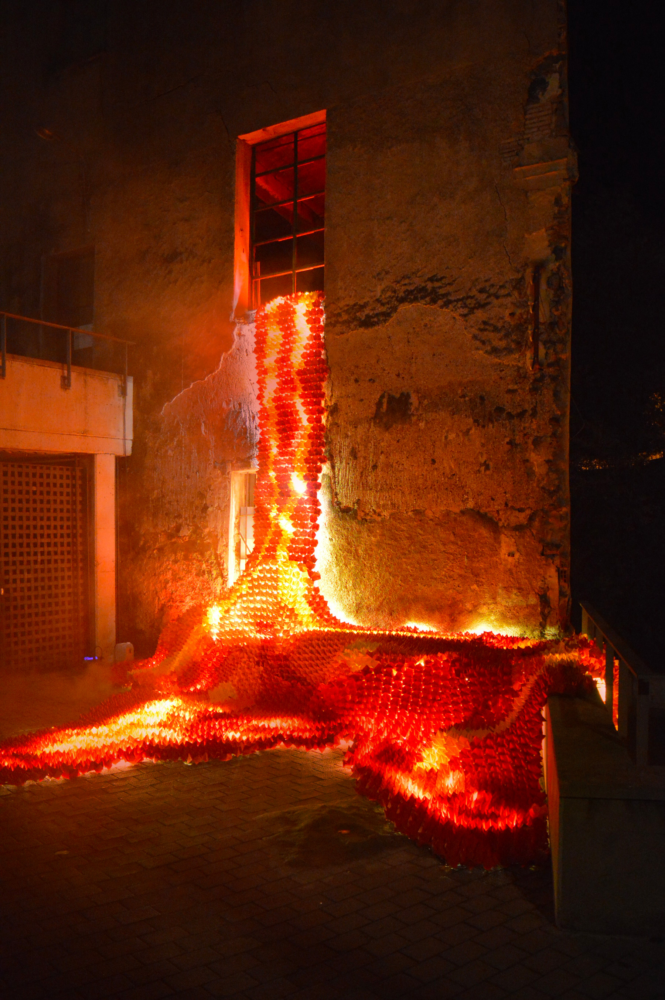
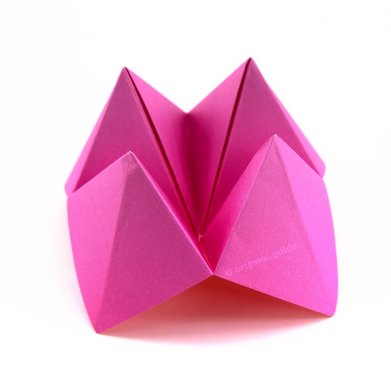
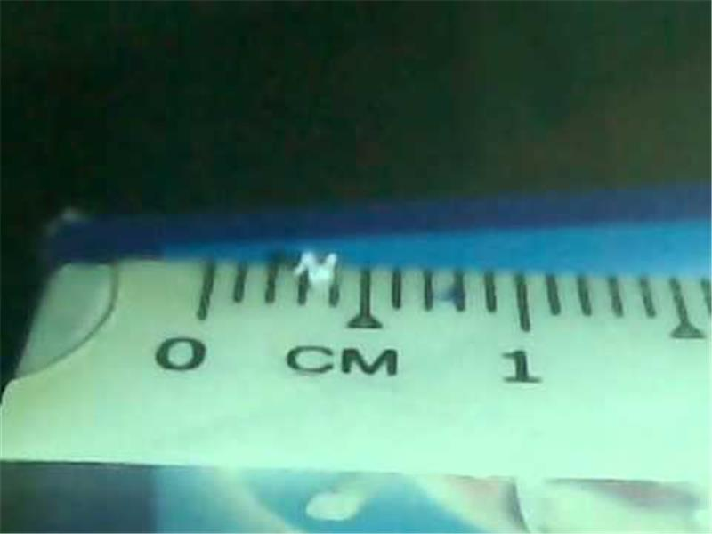
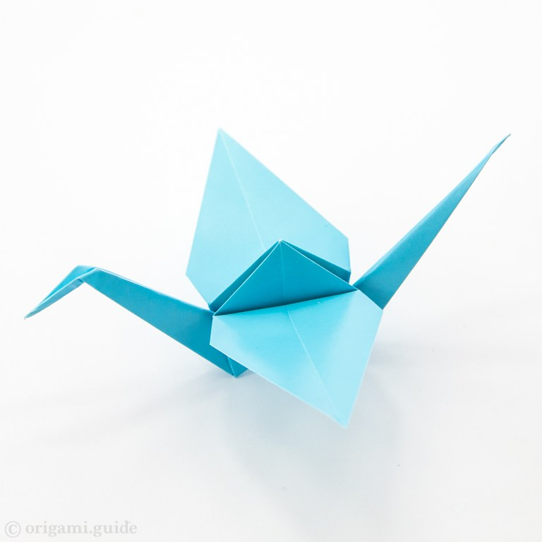
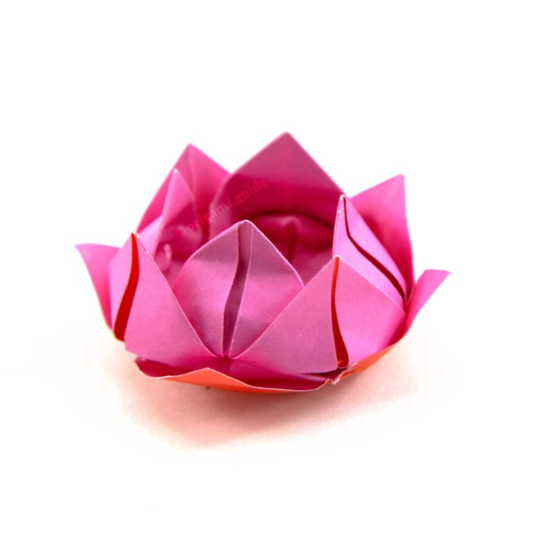
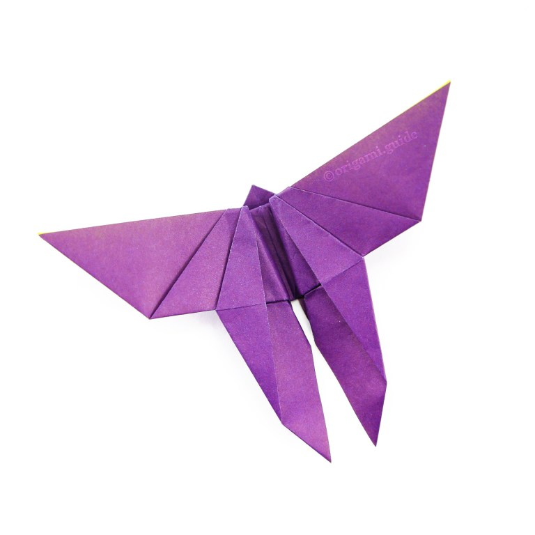

Oragami Designs
About Us
Follow Us
Fortune Teller
Fun Facts
- Another name for the fortune teller is the salt cellar because when turned upside down, food can be stored in its four pockets.
- In 2018, 10,000 fortune tellers were used to make an art piece called Origami Lava in Olot, Spain. It resembles lava pouring out of a window.

- It was first discussed in the US in a 1928 book called Fun with Paper Folding.

Crane
Fun Facts
- Yoneyama Yuichi made 100 paper cranes in record time: 40 minutes 35 seconds!
- Bhone Khaing of the United Kingdom made a 1 millimeter origami crane, the world's smallest!

- It is called orizuru in Japanese.

Lotus Flower
Fun Facts
- A white lotus flower represents purity.
- Unryushi paper is ideal for making lotus flowers in origami.
- The lotus's roots are unattached to the sea floor, demonstrating the belief that humans should not have attachments.

Butterfly
Fun Facts
- A poem by Ihara Saikaku describes origami butterflies being used in Shinto weddings.
- They adorn bottles of sake at weddings.
- Butterfly wings are transparent.
